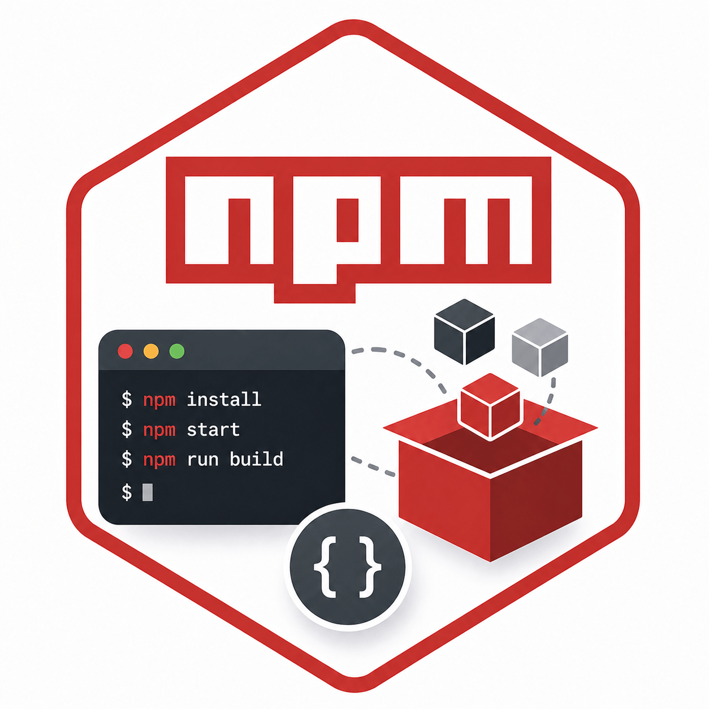

Správa npm balíčků
Pro správu balíčků je potřeba mít nainstalovaný Node.js a npm.

Aktualizace balíčků
Jak správně aktualizovat balíčky?
- 🚀 Aktualizace Storybook:
npx storybook@latest upgrade
Použije nejnovější verzi Storybook a provede upgrade.
- 🕵️ Zjištění zastaralých balíčků:
npm outdated
Vypíše seznam balíčků, které mají novější verzi.
- 🛠️ Aktualizace konkrétních balíčků:
npm install vite@latest @sveltejs/vite-plugin-svelte@latest
Nainstaluje nejnovější verze vybraných balíčků.
Tip: Po aktualizaci spusťte projekt a ověřte funkčnost. Některé aktualizace mohou vyžadovat úpravy v konfiguraci nebo kódu.
Globální balíčky
Kde najdu globální balíčky?
| 🖥️ Operační systém | 📂 Umístění globálních balíčků |
|---|---|
| 🪟 Windows | C:\Users\<user>\AppData\Roaming\npm\node_modules |
| 🐧 Mac/Linux | ~/.npm-global/lib/node_modules |
🔍 Zjištění cesty příkazem:
npm root -g
Záloha globálních balíčků
Jak zálohovat globální balíčky?
Tento PowerShell skript zálohuje seznam globálních balíčků a stáhne je pro offline použití.
# Vytvoření cesty k souboru se seznamem balíčků
$packageListFilePath = Join-Path $PWD.Path 'npm_global_packages.txt'
$outputFolder = Join-Path $PWD.Path 'offline_packages'
# Uložení seznamu balíčků
npm list -g --depth=0 | Out-File $packageListFilePath -Encoding utf8
# Vytvoření složky pro balíčky
if (!(Test-Path $outputFolder)) { New-Item -ItemType Directory -Path $outputFolder | Out-Null }
# Načtení balíčků a stažení .tgz souborů
$content = Get-Content $packageListFilePath | Select-Object -Skip 1
foreach ($line in $content) {
$line = $line.Trim() -replace '^[+`-]+\s*', ''
if ([string]::IsNullOrWhiteSpace($line)) { continue }
$parts = $line -split '@'
$packageName = $parts[0].Trim()
$version = if ($parts.Length -gt 1) { $parts[1].Trim() } else { '' }
$packageDir = Join-Path $outputFolder $packageName
if (!(Test-Path $packageDir)) { New-Item -ItemType Directory -Path $packageDir | Out-Null }
if ($version) {
npm pack "$packageName@$version" --pack-destination $packageDir
} else {
npm pack $packageName --pack-destination $packageDir
}
}
Obnova balíčků z offline zálohy
Jak obnovit balíčky ze zálohy?
Tento PowerShell skript nainstaluje všechny zálohované balíčky z offline složky.
$packageFolder = Join-Path $PWD.Path 'offline_packages'
$installBaseFolder = Join-Path $PWD.Path 'Installed'
if (!(Test-Path $packageFolder)) { Write-Host "Složka s offline balíčky nebyla nalezena." -ForegroundColor Red; exit }
if (!(Test-Path $installBaseFolder)) { New-Item -ItemType Directory -Path $installBaseFolder }
$tgzFiles = Get-ChildItem $packageFolder -Filter *.tgz -Recurse
foreach ($tgzFile in $tgzFiles) {
$packageName = [System.IO.Path]::GetFileNameWithoutExtension($tgzFile.Name)
$installDir = Join-Path $installBaseFolder $packageName
if (!(Test-Path $installDir)) { New-Item -ItemType Directory -Path $installDir }
npm install --prefix $installDir $tgzFile.FullName
}
Aplikační balíčky
git-cliff
Generuje kategorizovaný changelog z Git historie a Conventional Commits.
Instalace
npm install --save-dev --save-exact git-cliff
Projektová instalace drží verzi v package.json a integritu v package-lock.json, takže lokální prostředí i CI používají stejný nástroj.
Vytvoření konfigurace
npm exec -- git-cliff --init
Příkaz vytvoří cliff.toml, ve kterém lze deklarativně nastavit skupiny commitů, šablonu, tagy, řazení a odkazy.
Generování changelogu
npm exec -- git-cliff --config cliff.toml --output CHANGELOG.md
| ⚙️ Parametr | 💡 Význam |
|---|---|
--config |
Cesta k verzované TOML nebo YAML konfiguraci |
--output |
Výstupní Markdown soubor |
--repository |
Jiný Git repozitář než aktuální pracovní adresář |
--include-path / --exclude-path |
Omezení historie podle změněných cest |
--tag-pattern |
Regulární výraz určující release tagy |
--sort |
Pořadí commitů oldest nebo newest |
--offline |
Zakáže vzdálená API volání i při nastaveném remote |
Tip: Přidejte stabilní projektový skript a v CI používejte úplnou Git historii:
npm pkg set scripts.changelog:generate="git-cliff --config cliff.toml --output CHANGELOG.md" npm run changelog:generate